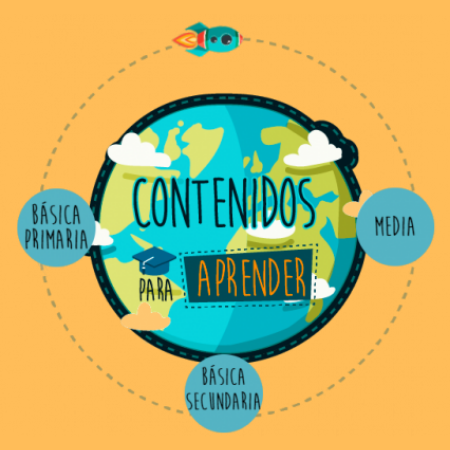

¿De dónde proviene la energía que utilizamos?
Recurso dirigido a estudiantes de básica primaria para comprender de dónde proviene la energía que utilizamos.
Ver más

El equipo del Portal Educativo Colombia Aprende realizó una selección de contenidos para que toda la comunidad educativa pueda ampliar en los conceptos de STEM + A e integrar material para fomentar el diálogo de saberes, la solución focalizada de problemas y el desarrollo de competencias o habilidades blandas en sus prácticas de aula.
Recurso dirigido a estudiantes de básica primaria para comprender de dónde proviene la energía que utilizamos.
Ver másEste recurso está enfocado para que los estudiantes de 4 y 5 de básica primaria comprenda las fuerzas magnéticas en la vida cotidiana.
Ver másEste recurso va dirigido a estudiantes de grados 6 y 7. Su estudio les ayudará a entender por qué debemos valorar los recursos hídricos del ecosistema local, así como la razón por la que no podría existir la vida sin agua.
Ver másEste recurso va dirigido a estudiantes de grados 8 y 9. Su estudio les permitirá, entre otras cosas, indagar acerca de los procesos industriales que generan en el ambiente acumulación.
Ver másEste recurso va dirigido a estudiantes de grados 10 y 11. Su estudio les permitirá entender dónde estamos ubicados en el tiempo y en el espacio y por qué es importante estudiar el movimiento de objetos en términos de su velocidad y aceleración.
Ver másEste recurso va dirigido a estudiantes de grados 10 y 11. Su estudio les permitirá explicar el significado de la humedad relativa y su relación con algunos fenómenos naturales.
Ver másEste recurso va dirigido a estudiantes de grados 8 y 9. Su estudio les permitirá revisar las funciones de la bioluminiscencia en diferentes especies animales (acuáticas - terrestres).
Ver másEste recurso va dirigido a estudiantes de grados 6 y 7. Su estudio les ayudará a entender, entre otras cosas, qué cambios pueden producir las fuerzas sobre el movimiento de los objetos y de qué está hecho todo lo que nos rodea.
Ver másEste recurso va dirigido a estudiantes de grados 4 y 5. Su estudio les ayudará a entender, entre otras cosas, los procesos de producción en físicos, químicos o biológicos. También podrá reconocer algunas técnicas industriales sencillas que se utilizan en su entorno.
Ver másEste recurso va dirigido a estudiantes de grados 1, 2 y 3. Su estudio les permitirá entender el manejo de los residuos sólidos del entorno.
Ver másEste recurso gratuito para estudiantes de básica primaria permite modelar procesos y fenómenos reales para la identificación de figuras geométricas.
Ver másEste recurso está dirigido a estudiantes de básica primaria con el objetivo de promover la resolución de problemas por medio de la identificación de figuras geométricas.
Ver másEste recurso está dirigido a docentes de básica secundaria que buscan abordar las áreas STEM en sus procesos de enseñanza a través de Greenpower Challenge, proyecto de ingeniería sostenible.
Ver másEste recurso dirigido a docentes de básica secundaria, es un apoyo para formular y resolver problemas asociados a la materia y la energía.
Ver másEste recurso dirigido a docentes de básica secundaria, es un apoyo para formular y resolver problemas asociados a sistemas mecánicos.
Ver másEste recurso dirigido a docentes de básica secundaria, es un apoyo para desarrollar actividades introductorias en geometría de superficies.
Ver másEste recurso está dirigido para que docentes y estudiantes de básica secundaria usen el modelado 3D para el reconocimiento anatómico de los seres vivos.
Ver másEste recurso está dirigido a docentes de media que buscan inspiración sobre el fortalecimiento de áreas STEM.
Ver másEste recurso está dirigido a docentes de cualquier nivel que busquen comprender la relación entre disciplinas STEM y los Objetivos de Desarrollo Sostenible.
Ver másEste recurso está dirigido para que los docentes de básica secundaria exploren cómo abordar las lecciones prácticas de STEM en el aula.
Ver más